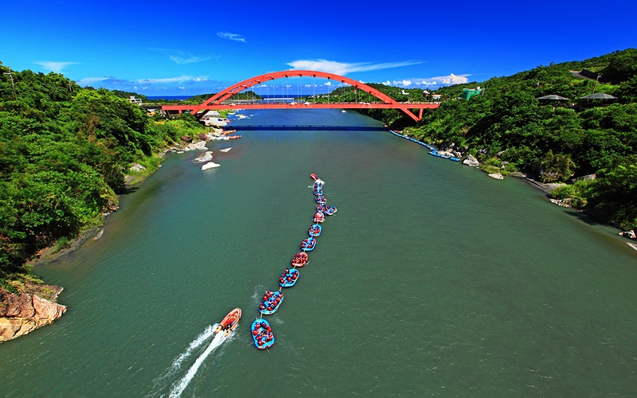

Hsuiguluan River
Hualien County
Hsuiguluan River
The Hsuiguluan River originate from the Central Moutain Range and flows into the Pacific Ocean.
It is the largest river in eastern Taiwan. The river has become a prime destination for rafting. Most of the routes for
rafting begin at the Rueisuei Bridge and end at the Changhong Bridge.There are many riptides, rapids and swirls
along the way, making rafting challenging and exciting here.
- Best seasons: all year around
- Transportation:
The nearest train station from this region is the Rueisuei station.